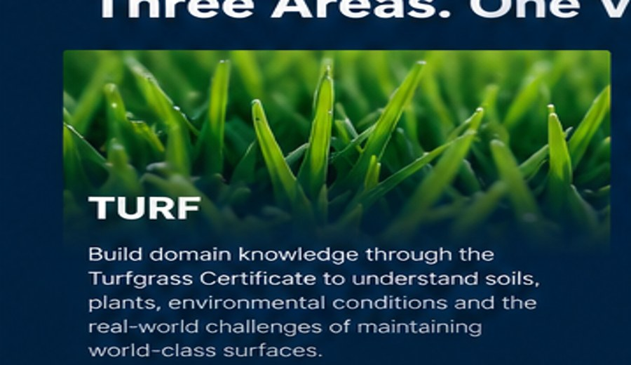
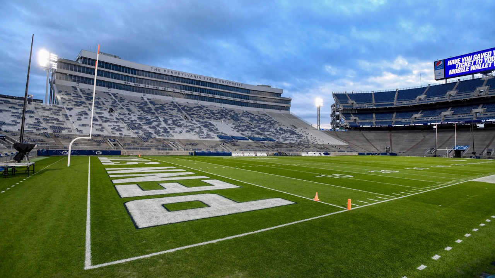
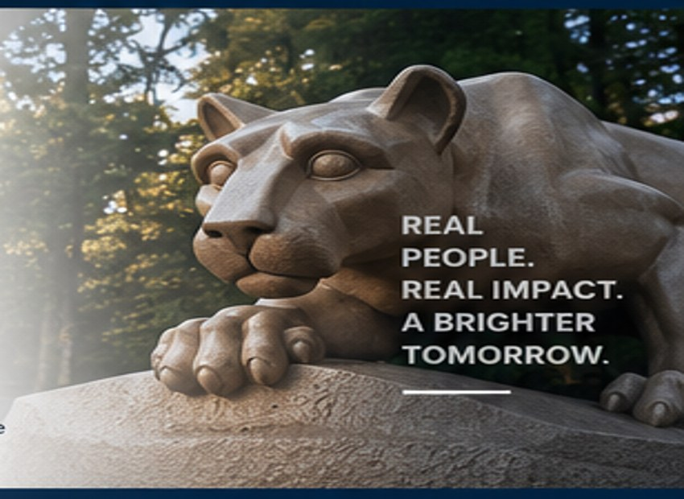

Observe
Instrument the environment and collect useful signals.
PENN STATE • SPORT • TURF • OPERATIONS
PEOPLE + DATA + ENVIRONMENT + SPORT
Exploring what happens when mature operational thinking from technology meets the science, people, and environments behind sport.
See the playbook →THE IDEA
An emerging way of thinking about golf courses, stadiums, and sports fields as operational systems — physical, biological, technical, and human.
This isn't about replacing superintendents, agronomists, grounds crews, or facility experts. It's about helping experts get better information earlier, connect systems that are usually separate, coordinate across specialties, and act before small problems become big ones.
Instrument the environment and collect useful signals.
Establish baselines and find meaningful patterns.
Detect abnormal conditions before they become incidents.
Get the right information to the right expert at the right time.
THE PENN STATE CONNECTION
My Penn State path is intentionally multidisciplinary: learn the environment, understand the sporting context, and expand the ability to lead across unfamiliar professional domains.

Penn State Turfgrass coursework builds the scientific and practical domain knowledge: plants, soils, environmental conditions, and the realities of maintaining high-performance playing surfaces.

Sport is the environment: golf, baseball, football, athletic fields, facilities, events, athletes, fans, media, and communities.
MDS and OLEAD/LHR coursework broadens the people side: communication, influence, group effectiveness, decision-making, and leading across disciplines — not just engineering teams.
This is a personal educational concept and is not an official Penn State program, department, or endorsement.
THE TURFOPS PLAYBOOK
For decades, modern software operations learned to turn complex systems into observable, manageable environments. The interesting question is what happens when the same operational philosophy is thoughtfully translated to living sports surfaces.
“Don't just know how to fix a problem after it happens. Build the system that helps you see it coming.”
THE DIFFERENT PERSPECTIVE
Automation, monitoring, continuous integration, infrastructure, release engineering, and operational collaboration existed before organizations began treating them as a connected discipline.
Turf technology is following an interesting path of its own: sensors, autonomous equipment, precision applications, analytics, dashboards, and predictive systems are increasingly available. The opportunity is not merely to own the tools. It's to build a repeatable operating model around them.

SO WHAT'S THE JOB?
But if organizations eventually need TurfOps engineers, somebody will need to do the work — and somebody will need to lead them.
working alongside agronomy • grounds • irrigation • equipment • facilities • event operations • IT • management
#WEARE